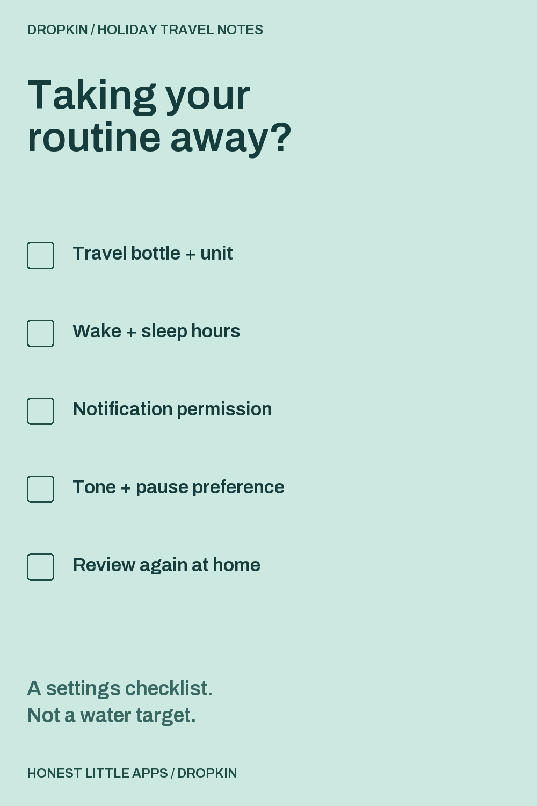
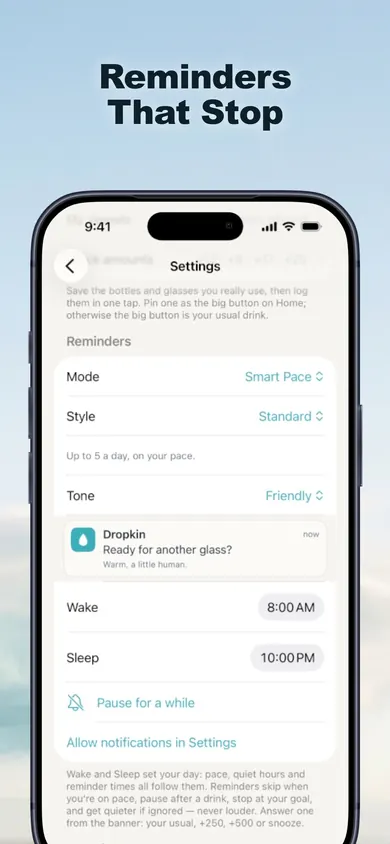

Pack a reminder routine that fits.
Check each item after reviewing it in your app or phone settings. This page doesn't change those settings.

Three places to look in Dropkin.
The numbered notes explain this actual App Store screenshot. They aren't extra controls added to the app.

1 / Reminder approach
The listing says reminders stay quiet when you're on pace and stop at your chosen goal. They're intended to follow your settings, not interrupt at any cost.
2 / Your waking hours
Wake and sleep settings define the reminder window. Review the values shown when your daily routine changes.
3 / Pause when you want
The screenshot includes a pause control. The listing also says reminders can be paused or switched off at any time.
Changed plans don't need perfect logs.
Different bottle?
Dropkin lets you save vessels using their actual capacity. Whole, half and quarter logging options make it possible to record the amount you drank instead of treating every pour as a full bottle.
Accidental entry?
The listing describes Undo after logging and the ability to edit or delete a drink in History. A correction is better than leaving a mistaken entry in the record.
Missed a day?
Dropkin's optional worlds don't wilt or remove earned progress after a missed day, according to the listing. Extra water beyond your goal earns no additional reward. This guide doesn't suggest catching up by drinking extra.
What the free app covers.
Useful on the trip
Unlimited logging, saved vessels, reminders, Hydration Pace, widgets, Apple Watch, Shortcuts and 30-day history are listed as free. No account is required, and the app works offline.
Optional Pro
Pro adds all four worlds, Pro styles, saved Looks with Auto-Look, and 90-day/full-year history. Monthly, annual and lifetime choices are listed. See your local purchase screen for prices and eligibility.
Before you use the checklist.
Does this tell me how much water to drink?
No. It reviews reminder setup only. Dropkin tracks a personal goal you choose; it does not determine your hydration needs. If you have an individual fluid plan, use that plan rather than an amount from this page.
Will reminders automatically follow a new time zone?
This guide does not verify or promise that behavior. After arriving, review the hours displayed in the app and your phone's settings before relying on reminders.
Does checking the boxes change Dropkin?
No. This is a separate browser checklist. It doesn't connect to Dropkin, request notification permission, or schedule alerts. It stores nothing after the tab is reloaded.
Who made this guide?
Honest Little Apps, the publisher of Dropkin. This is a product setup guide, not an independent review or medical advice.
Save your bottle. Log your actual drink.
Start with the free tracker and choose reminders that suit your routine. The extra worlds can wait.
Get Dropkin for iPhone and iPadRequires iOS/iPadOS 18 or later. Apple Watch support is listed.
Useful for someone else?
Share the public guide. Your entries and results are not included.
Open the public guide link